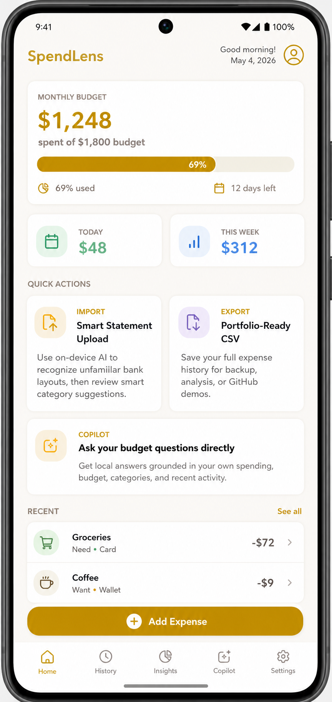
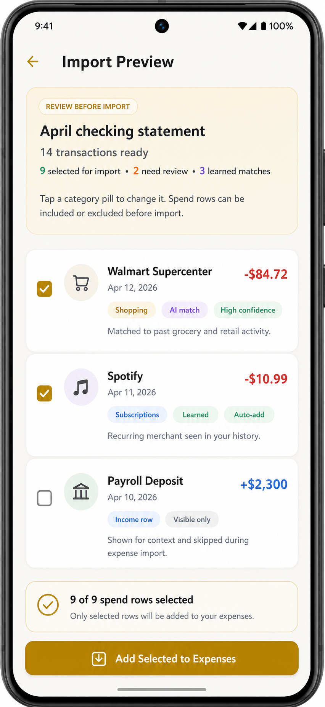
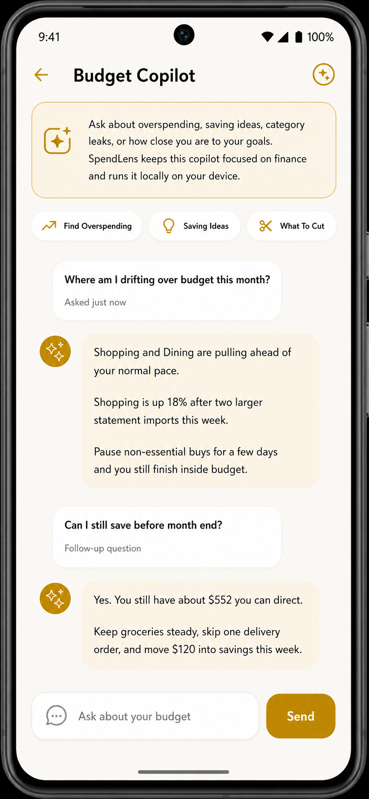

Money with context
Mood tags, categories, payment method, notes, and budget pace make spending patterns easier to understand.
SPENDLENS
SpendLens is a clean Android budgeting app built for people who want more than a plain transaction list. Track expenses with context, review imported bank statements, spot overspending sooner, and get private on-device budget guidance.

Mood tags, categories, payment method, notes, and budget pace make spending patterns easier to understand.
Bring in statement rows, inspect suggested categories, and confirm only the expenses that belong in your ledger.
Stay local-first with app lock, widget support, and on-device budget guidance instead of sending your spending data away.
APP SCREENS
Check live budget progress, quick stats, recent expenses, and shortcuts into the parts of the app you use most.

Review statement rows before saving them, change categories where needed, and keep full control over what gets added.

Ask focused money questions and get local responses based on your own spending history, budget, and category trends.
WHY PEOPLE USE IT
Add expenses fast with category, note, mood, payment method, and date, so each entry has useful context later.
Use remaining budget, pace feedback, alerts, and snapshots to notice drift before it turns into end-of-month panic.
Statement rows are reviewed before import, so your ledger stays intentional instead of filling with noise or mistakes.
Leak detection, reflections, and spending summaries make it easier to understand habits instead of only counting totals.
Use app lock, a home screen widget, and local-first storage for a practical personal finance experience on your own device.
Export the ledger to CSV anytime for backup, analysis, or sharing without being trapped inside the app.
EXPLORE MORE
SpendLens is available as a public GitHub project with the full source, screenshots, and build pipeline behind the app experience shown here.